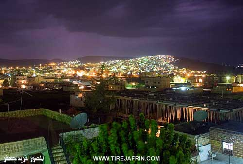
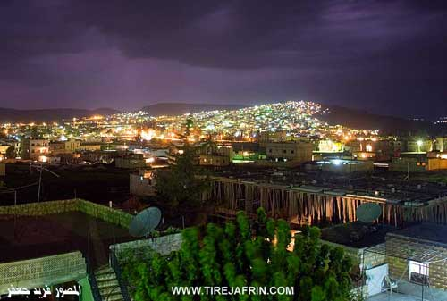
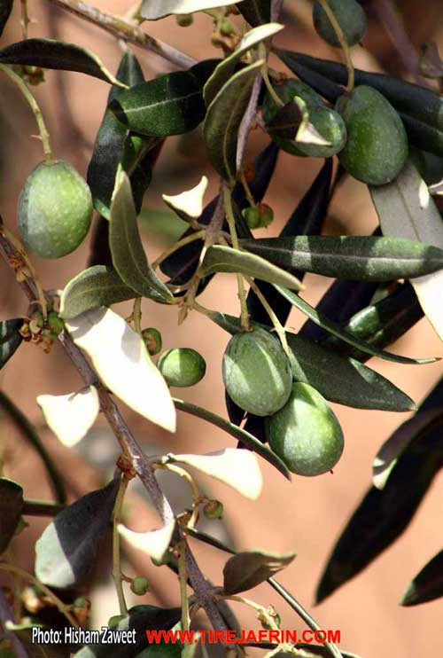
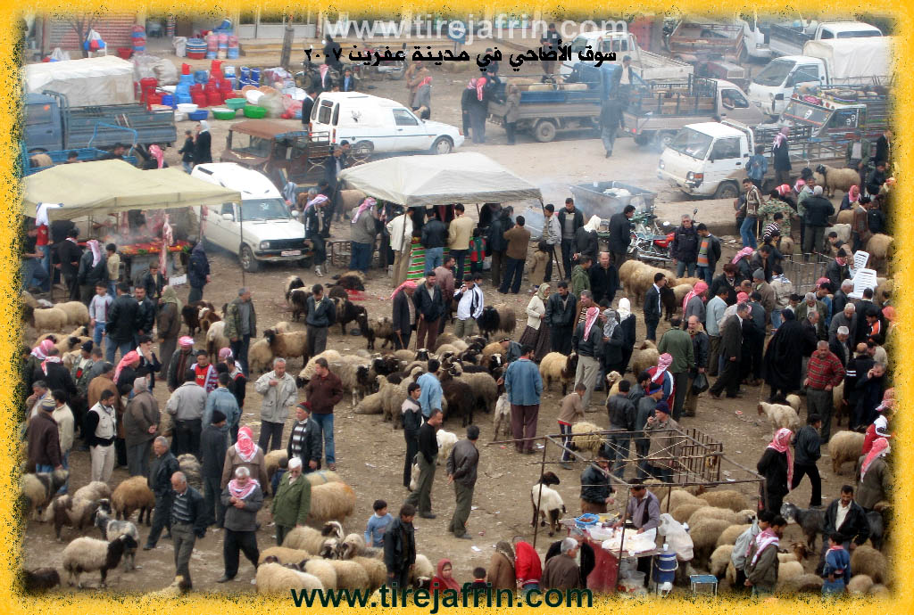
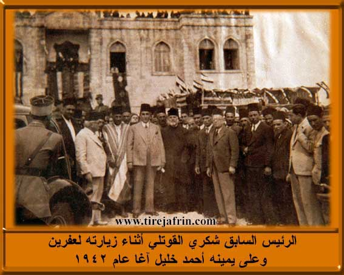
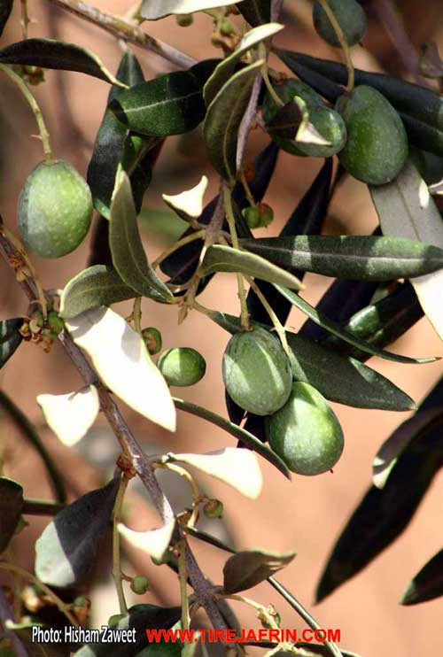
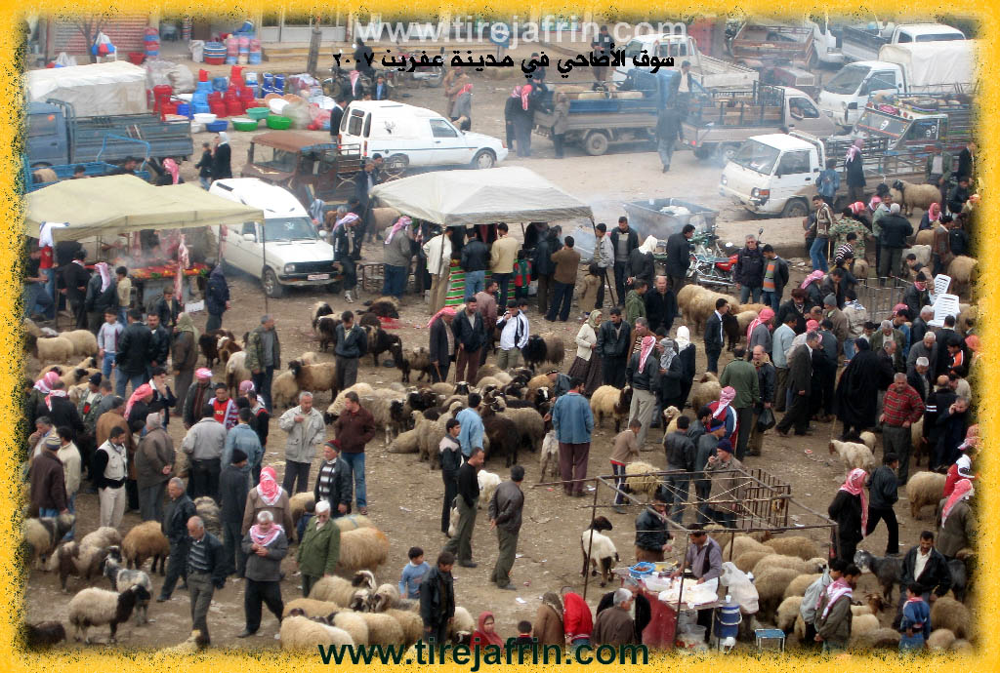
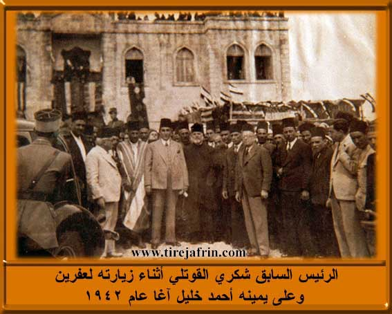

General Information
Nahiya (Subdistrict)
Efrîn
Also Known As
Afirîn, Afrin, Afrîn, Efrîn, Çiyayê Kurmênc, Çiyê Kurmênc, آفرين, عفرين
Tribes
Families, Clans, etc.
Foundation Date
1935
Size

Photos
 

 






Foundation/Origin Information of Efrîn
The first inhabitants were Armenians who fled Turkish persecution. They were joined by regional leaders like Al Sido Mimi, Al Ghabari, Darwish Agha Shamo, and Ahmed Khalil.
Source: TirejAfrin Site
Possible Village Name Meaning of Efrîn
Multiple theories: 1) From Arabic for "dust". 2) From the ancient Lycian word "Eple" (via Assyrian/Greek "Aprie"), combining the root for "water" (Av) and the Kurdish word for "red earthy color" (riwîn), meaning "red earthy water". 3) From the Kurdish word "Afirîn," meaning "creation and giving."
Source: TirejAfrin Site
From "The Mountains of the Kurds (Afrin Region): a Comprehensive Geographical Study"
1. Efrîn, city of Afrin, 47108/ - (210 – 340m):
- Afrin: is the name of the Afrin River, and it was given to the city after its establishment at the beginning of the twentieth century. We have found the name "Afrin" in its current form in four historical sources from the Islamic eras, which are: [History of Aleppo - by al-Uthmani, p. 478, events of the year 1085 AD. And Subh al-A'sha by al-Qalqashandi, p. 57. And al-Durr al-Muntakhab by Ibn al-Shihna, p. 167. And Mu'jam al-Buldan by Yaqut al-Hamawi, the second part, p. 180]. Thus, the oldest record of the name "Afrin" in its current form dates back to the year 1085 AD. However, none of these sources have touched upon the meaning of the name "Afrin" or its origin. We will search here for the origin and meaning of (Afrin), and mention some opinions regarding it:
1- "Afrin" in Arabic dictionaries and sources:
It is stated in "al-Qamus al-Muhit" that "Afar: means turbid with what is mixed with it of color, and the thing is considered turbid: i.e., it is mixed with dust."
And it is stated in the dictionary "Lisan al-Arab": Ufrin means "dusty," and it is said that it is the lion. It is said, for example: Laithu Ufrin (a lion of Ufrin).
As for Khayr al-Din al-Asadi, he says: that the word Afrin means dust. He quotes from al-Abshilihi: that it means dust /vol. 5, p. 413/. Abdallah al-Helou asks about that and says: (Was the region distinguished by the abundance of its dust to be so named? The reality is that there is no such explanation). p. 396). But it seems that Mr. al-Helou was not aware that the Afrin region is rich in water, rugged terrain, and antiquities, and that its dust is only mentioned very rarely.
2- Afrin in Assyrian and Greek Texts:
An Assyrian text dating back to the year 876 BC mentions that the river Aprie flows through the plain of Patin (1). The famous Greek historian "Strabo" also mentions the name of the Afrin River in the same form, "Aprie," in the first century BC.
The historians have agreed that the origin of the word Apre is from the Lician language, which is one of the Indo-European (Aryan) languages, ancient in Asia Minor. The basic form of the word is: Eple (2). As we know, the root -Ap in the ancient Aryan languages, including Kurdish, means: water. The Kurds, according to their dialects, change the letter p to v, so it becomes Av. The word has remained in the Indian subcontinent in its ancient form in terms of pronunciation and meaning, but it is not pronounced as Ab or Ap, meaning "water," like the name "Punjab," which is composed of two syllables: Pênc, meaning five, and Ap, meaning water. Due to the absence of the letter P in the Arabic language, it was replaced by the letter "F," just as the letter Alif was replaced by the letter "ع," and thus the first syllable of that word became "Af" instead of -Ap.
As for the syllable re-, it is the first syllable of the old Kurdish word "Riwîn," meaning "the reddish clay." It is said Bizina rwîn "the goat with the reddish color," or "the reddish clay-colored goat." It is also said Ava riwîn "the water with the reddish color" or "the reddish clay-colored water." By combining the two words: Av (water) and Riwîn (the reddish clay), a new name is formed, which is Avariwîn or Avriwîn, "Afa Riwîn or Afriwîn." As can be observed, it is almost identical in form to the word "Afrin" and means "the water of the reddish clay." This is a known characteristic of the Afrin River during its major floods. The elders from the inhabitants of the region in the northern villages still pronounce the name Afrin in the form of "Efrîn." This is a word that refers to the remnants of plants and the reddish clay loam that floats on the surface of the river during its flood.
As for taking the root rê- or lê- – in its other Kurdish meaning, i.e., "course, path, or way" – the full name would be "the course of the water or the stream of the water."
Footnote 1: Encyclopedia of Aleppo... Khayr al-Din al-Asadi, the first part, page 172.
Footnote 2: This syllable is mentioned in the manuscript "The Dialects in Afrin - Mamad Jamo," who is a researcher in the languages of the East.
3- Afirîn:
A Kurdish word meaning creation and giving. The Afrin River with its flowing water was and still is a source of life and giving. It spreads life on its banks for hundreds of villages and cities. It is a source of giving to the thirsty, as if the Kurds named the river "the giver of life and fertility," Afirîn, just as they name a woman "Afret," the creator of life.
While the meaning of the name and its origin may be, the predecessors of the Kurds from the Hurrians and Medes have been present for a long time in the Taurus Mountains regions, for a period that began before the Common Era. It also spread on the banks of the Afrin River since its source to its mouth in hundreds of ancient Kurdish villages. The Kurds and their ancestors were a sedentary people who knew the river by several names, Aprie, Afrin, or Afirîn. And despite all that, the definitive knowledge of the origin of some of the ancient names remains a matter of great difficulty.
- The sources indicate that in the Roman era, a Roman "fast" road passed through the location of the city of Afrin. The excavations for the buildings on the sides of the Jinderes road street have revealed finely carved archaeological stones and large clay jars, which indicates an ancient settlement at the site. It is also mentioned that there were mills and ancient caves north of the old building of the electricity company, which were used in ancient times by travelers, as evidenced by the ancient monetary coins that appear in their soil.
- History books mention that in the Middle Ages - around the fourteenth century AD - there was a bridge at the location of the city named "Qibbar." In the late Ottoman era, there were several inns for accommodating convoys and travelers north of the current bridge near the aforementioned caves.
The city of Afrin consists of the following neighborhoods:
The Old Town: Construction began on the official buildings and administrative offices of the city, such as the police station, the prison, and the serai, at the beginning of the French Mandate period, and their construction was completed between the years 1925 and 1930. During that time, the Jinderes road street was established, and on its sides, shops and small hotels were built.
As for the first inhabitants of the city, they were Kurds from the village of Kirsan, and some Armenians who were loyal to the French forces in the face of Ottoman oppression. Then the construction of houses was joined by some of the region's aghas from the aghas of Ghaybari, Sheikh Ismail, Sayyid Mimo, Ahmed Khalil Agha, and Dliwarush Agha, the leaders of the Yazidis...
and Afrin remained a small town until the late sixties of the twentieth century. Its few houses spread on the slope of the mountain with a coordinated and beautiful form, and most of them were of stone and covered with wood and one floor.
After that date, the town witnessed a great urban expansion due to the intense local migration to it, and large new neighborhoods were formed, which are known popularly as follows:
- Al-Mahmudiyya Neighborhood: It is in the northwest of the city and is named after Mahmoud Qadib al-Ban, who was the first to build houses for residence there in the early seventies of the twentieth century.
- Al-Zaydiyya Neighborhood: It is in the north and is the old village of Zaydan. Its inhabitants were a mixture of Kurds, Arabs, and Christians loyal to some of the Aleppine and European families and the French (1) on the plain adjacent to the city of Afrin from the west. This neighborhood has extended northward to the summit of the Xemrevîn mountain. The inhabitants of this neighborhood are a mixture of Kurds, Arabs, and Christians. As for the name, it is attributed to the shrine of "Sheikh Zayd" located within the neighborhood's graveyard on the summit of the mountain.
- Al-Ashrafiyya Neighborhood: A new neighborhood located east of the river on the Empêlk plateau, which is adjacent to the Afrin river. This neighborhood was founded in the late sixties of the twentieth century. Its first inhabitants were from "Wahidê Aşvan" (Wahid al-Tahan) from the village of Kafr Batra. A large neighborhood with its simple houses scattered over the entire western slope of the Empêlk mountain. Its inhabitants are mostly migrants from the villages of the region, and most of them work in agricultural jobs. This neighborhood is considered the belt of poverty for the city of Afrin.
- Qeracî Gênco Taxa (Qaraj Kenjo Neighborhood): It is located in the south of the city, in the southern part of the Empêlk plateau. The neighborhood is named after its land owner "Kenjo Agha," and some of its inhabitants now call it the "Tariq Turendeh neighborhood" due to its location on the old Turendeh road. The first to build houses for residence there was the Tayyib family "Huryak" around the year 1973. The site of the neighborhood contains ruins of buildings of a military barracks for the English army that date back to the Second World War period.
Its houses spread out in a sprawling manner on the western slope of the adjacent mountain to the Afrin River, taking a north-south extension, extending to the village of Turendeh, which itself was annexed to the administrative boundaries of the city of Afrin.
Footnote 1: Most of those lands belonged to "Madame Salha," the wife of the Italian consul in Aleppo, and the Yazidi Kurds still curse her name in their songs for her cruelty, and her stone house is near the Saray of Afrin, which was demolished in 1999 and a three-story building was built in its place.
- Al-Bubna Neighborhood: A small street adjacent to the western bank of the Afrin River upon its arrival in the city. Most of its inhabitants are from the Arab al-Bubna, and it was a cattle market.
- Al-Autostrad Neighborhood: It is located west of the city, and it is a modern neighborhood with beautiful multi-story buildings.
The city of Afrin is the capital of Jabal al-Kurd and the main center for its economic, social, and administrative activity. It is a beautiful, quiet city with a distinct geographical location and a pleasant climate. The Syrian Geographical Dictionary says of it that it is one of the most beautiful small cities in Syria.
The construction movement began to be active in the city of Afrin in the last decades of the twentieth century. Its buildings rose and a number of good and diverse commercial shops were established. It now has a daily market for agricultural and animal products, in addition to the weekly Wednesday market and another cattle market.
There are in the city and its vicinity a number of olive presses, factories for the production of birin (olive pomace), and soap, and others for building materials, some food materials, a workshop for beverages, and mills for flour... And its number has increased to a number of doctors, pharmacies, and shops for tailoring, blacksmithing, carpentry, and the maintenance of instruments and vehicles, in addition to four private hospitals. Due to the settlement of tens of thousands of the region's sons in Aleppo, there is a permanent and heavy transportation movement to and from it.
The population of the city of Afrin, according to the estimates of its municipality in 2006, reached about 84,000 people (see the first chapter of the book).
Taken from pages 170-174 of the Arabic edition of:
Ali, Mohammed Abdo. Jibal al-Kurd (Mintaqat Afrin): Dirasah Jughrafiyah Shamilah [The Mountains of the Kurds (Afrin Region): A Comprehensive Geographical Study]. Self-published, 2014.
Summaries
I. Summary from TirejAfrin Site of Efrîn (English)
According to the book Afrin... Her River and Green Hills by the writer Abdulrahman Mohammed from the village of Qatmah
Afrin: Located in the northwestern corner of Syria. Afrin took its name from the word "Afro", which in Aramaic means fertile land and is located at the southern slope of Mount Zawiya at an elevation of 392 meters above sea level and on the elevated right bank of the Afrin River, which keeps it safe from river flooding. It is connected by a fertile civilization and is 60 km northwest of the city of Aleppo. It is bordered to the north by the highlands and farms of Mount Zawiya and the village of Tell Tawil. To the south by the plain and Afrin River and the village of Karsan Tash, and to the east by the Afrin River valley and the Aleppo-Afrin road and the village of Arshqibar.
To the west lies the fertile agricultural plain and the villages of Kafr Shiel and Maarata. The history of Afrin dates back to the beginning of the twentieth century when in 1925 the site of Arshqibar Bridge was chosen to build a government house, which was the beginning of the establishment of Afrin city to become an administrative center for managing the region, as it organizationally attracted the surrounding areas and the administrative center was transferred from the village of Maabatli and Maarata to Afrin city to become the final administrative center for the region. Afrin was a place for commercial caravans to rest between Aleppo and Alexandretta Province. The city expanded after independence and incorporated some neighboring villages. Its old houses are made of stone and clay with flat wooden roofs. The city expanded during the correction era and regulatory plans were prepared to include 830 hectares. Modern concrete multi-story buildings began to spread around the old city core and on both sides of its modern streets, and new neighborhoods were established such as Al-Ashrafiyya neighborhood east of the city and Al-Mahmoudiyya neighborhood northwest of the city. Afrin city is considered one of the most beautiful small cities in the Syrian Arab Republic in terms of street organization since the French era. The inhabitants of this city work in agriculture, most importantly olives, grains, legumes, and vineyards. As for irrigated crops, they are watered from the Afrin River waters and artesian wells. The people also grow summer vegetables near the Afrin River, cotton, and sugar beet irrigated from the Afrin River. Most of its inhabitants depend, in addition to their agricultural resources, on what professional work, services, and commercial exchanges bring, and some of them work in state institutions. It has an electricity network and drinking water drawn from the Kafr Jannah spring northeast of Afrin about 7 km away and from artesian wells. It has several elementary, preparatory, and secondary schools, an industrial secondary school, and a Sharia preparatory school. Its population is about 47,108 thousand people, and the total population of the Central District is 136,873 people as of 1/1/2006. It has a cultural center, rural development center, health and veterinary centers, a post, telegraph and telephone center, a childhood care center, a guidance unit for carpet and rug making industry, in addition to official government departments. There are several mosques, the oldest being Salah al-Din Mosque near the government house. There are 11 sesame oil extraction factories, five olive oil presses, four small soap factories, and a tin plate factory. The Afrin Market (Bazaar) was also established during the era of Jamil Ahmed Bafi Agha, mayor of Afrin in 1935, where a bazaar is held every Wednesday in the city center. A city council was established in Afrin city in 1983 with ten members. Afrin is connected to Aleppo city by two paved roads: the first Afrin-Deir al-Jamal-Aleppo and the second Afrin-Darat Azza-Aleppo. Among the first inhabitants were the Armenians who fled from Turkish persecution and built their homes around the government buildings, and worked in blacksmithing and other trades that the French forces needed, especially in horse equipment preparation.
Then some regional leaders joined in building residential houses, such as Al Sido Mimi, Al Ghabari, and the leader of the Yazidis at that time Darwish Agha Shamo, then Ahmed Khalil from Oshaghli Factory and others.
Afrin
An administrative region in Mountain of the Kurds belonging to Aleppo Governorate, extending eastward to Mount Simaan. It is bordered to the north by Turkey, to the east by Azaz city, to the south by Mount Simaan region and Idlib Governorate, and to the west by Alexandretta Province. It consists of Afrin city and seven districts: (Central Afrin villages, Bulbul, Jindires, Rajo, Sharan, Sheikh al-Hadid, Maabatli) and a total of 263 villages and 100 farms.
Afrin River
The Afrin River is located northwest of Syria, in the Afrin region of Aleppo Governorate. It originates from Mount Lukkam and the Antab plateau and passes through Rondan. The length of its course in Syrian territory is 85 km out of its total original length of 149 km from its source to its end in the Amq Depression in Alexandretta Province.
It penetrates Syrian territory northeast of Shaltah village at an elevation of 360 m and passes near Deir Sawan village after Shaltah, crossing the Roman bridges erected on this river. It meets the Saboun River west of Vira Kan village and heads deep toward Midanki where the multiple hard rocks form waterfalls in its course in Midanki and Kumruk, penetrating the land with many bends until Afrin city. Several streams and small springs feed it and form many bends that descend to it from the heights of Mount Simaan and Lilon to the east and Mount Akrad to the west. With an average flow of 8.6 m³/sec, and in spring the flow reaches 15.6 m³/sec, sometimes causing destructive floods as happened in 1974 when the main bridge at the entrance to Afrin city completely collapsed and a replacement bridge was built. The river waters decrease and become scarce in summer, reaching a flow of 1.41 m³/sec. To regulate the river waters and benefit from its waters, the state was interested in building a dam on the river course called the Seventeenth of April Dam. The foundation stone was laid in 1980 by Dr. Abdul Raouf Qasim, former Prime Minister, to build a large dam on the river course north of Afrin city at the Midanki site. The dam lake extends eastward for about 12 km. This dam is located north of Afrin city at Midanki village and was inaugurated in 2004 by Prime Minister Engineer Mohammed Naji Atri. It will benefit from the river waters for irrigation and reclamation of an average number of hectares in the Afrin and Jindires plain up to the Turkish borders. Several bridges are also built on it west of Midanki near the Kumruk waterfalls. There are two bridges in Afrin city: the first at the site of the old collapsed bridge and the second 500 m south. There is also a third bridge at Kafir village and Birj Abdul Walaw, and a fourth bridge at Tell Salur village.
The Afrin River, especially after the establishment of the Seventeenth of April Dam, is considered the vital and important artery of the region and forms a tourist outlet for Aleppo city. Its river waters are also drawn to irrigate Afrin and Azaz cities at present.
Afrin Municipality
In 1926, the administrative center of the region moved from Maabatli village, and until 1927 the new Afrin municipality was established where the number of its houses was limited.
The first mayor of Afrin municipality from 1926 to 1930 was Mr. Jamil Ahmed Agha Bafi from Qatmah village (Afrin region), where the municipality developed with its limited capabilities. A house was built for the municipality next to the government house near the old Afrin bazaar until the sixties of this century. Due to the expansion of the city size, especially toward the north and west on the Zaydiyya-Rajo road and on the Jindires road Alexandretta Province street, and during the glorious correction era, the city area reached 830 hectares. A regulatory plan was then developed for it, including attention to irrigation and drainage networks, telephone, electricity, and water. A center for rural development, guidance unit, and health centers were also established. Several new neighborhoods were also created on the eastern side of Afrin city on the Basuta and Aleppo road such as Al-Ashrafiyya neighborhood and others.
In 1983, the new Afrin City Council was established instead of Afrin municipality in response to organizing the local administration law. The number of members of this council reached 20 members.
The city continues to grow and expand, followed by expansion in service centers such as fire departments, car garages, commercial centers, and government institutions.
The Afrin City Council is considered one of the most important councils belonging to Aleppo Governorate due to its large size.
Afrin Market (Bazaar)
Commercial markets are considered among the most important areas where people gather to meet their needs and exchange commercial goods. In the Afrin region, before 1927, the people of the region used to visit the Kilis commercial market in the Mountain of the Kurds district for shopping. After the French mandate over Syria and the transfer of Kilis city to Turkey, the remaining region was left without a market. After forming the district center in Afrin city, those responsible for district administration felt the need to establish a bazaar where people would gather. Near the old river bridge near the government house from the eastern side, a weekly market was established every Wednesday. Mr. Jamil Ahmed Agha, the municipality president, called for celebrating the establishment of this weekly bazaar, where joy celebrations were held with drums and dancing expressing the importance of the occasion. Due to the city's expansion and the inability to accommodate and the magnitude of commercial exchanges, the market was moved to another location near the official Afrin secondary school west of the city.
This market is currently considered one of the most important commercial centers in the countryside of Aleppo Governorate, where agricultural products, especially olives, are displayed. Traders and people also visit it to meet their needs.
In 2001, due to the abundance of agricultural products, the city council decided to establish the Hal Market on the Basuta road east of the city. There are also small bazaars in the district centers in Rajo, Bulbul, and Al-Hammam village.
Among the holders of higher degrees in Afrin: Ahmed al-Nasser / Doctorate in Chemistry / Britain - Hussein Habash / Doctorate in Journalism / Russia - Salah Manla Ali / Doctorate in History / Russia - Fawzi Rasoul / Doctorate in Chemistry / Germany - Fatih Baso / Doctorate in Electrical Engineering / Russia - Qader Arbo / Doctorate in Meteorology / Germany - Mohammed al-Khatib / Doctorate in Agriculture / Britain - Ahmed Sheikho / Doctorate in General Surgery / Romania
Village heads of Afrin city: Mr. Abdul Hanan Bellal / Head of Mislon neighborhood - Mr. Ghazi al-Hamid / Head of Tishrin neighborhood - Mr. Ahmed Mohammed / Head of Adar neighborhood - Mr. Mohammed Amin Aybo / Head of Progress neighborhood - Mr. Imad al-Din Sheikho / Head of Unity neighborhood - Mr. Mahmoud Hussein al-Khalil / Head of Fida neighborhood - Mr. Faiq Ali / Head of Revolution neighborhood.
According to the book Mountain of the Kurds (Afrin) Geographic Study by Dr. Mohammed Abdo Ali:
- Afrin: It is the name of the Afrin River, given to the city after its establishment at the beginning of the twentieth century. We found the name "Afrin" in its current form in four historical sources from the Islamic era: [History of Aleppo – by al-Uqaymi, page of events of 478 AH/1085 AD. And Subh al-A'sha by al-Qalqashandi, p.57. And al-Durr al-Muntakhab by Ibn al-Shahna, p.167. And Dictionary of Countries by Yaqut al-Hamawi, Part Two, p.180]. Thus, the oldest mention of the name "Afrin" in its current form dates back to 1085 AD. However, none of those sources addressed the meaning and origin of the name "Afrin". We will research here the origin and meaning of this name and mention most opinions regarding it:
1- "Afrin" in Arabic dictionaries and sources:
According to "Al-Qamus al-Wasit", that 'afar and 'affar: means mixed it with what contradicts its color, and i'tafar al-shay': meaning mixed it with dust. In the dictionary "Lisan al-Arab": 'ifrīn means "corrupted", and it was said it is corruption. It was said for everything strong: layth 'ifrīn.
As for Khayr al-Din al-Asadi, he says: the word Afrin means dust. He quotes from Father Shalhat: that it means dust, /Vol.5, p.413/, in Abdullah al-Hulw's inquiries about this and he says: (Was the region distinguished by the abundance of its dust so it was named thus? The fact is that there is no other explanation, p.396). But it seems that Mr. al-Hulw does not know that the Afrin region is rich in water and forests, and dust is rarely stirred up in it.
2- Afrin in Assyrian and Greek texts:
An Assyrian text dating to 876 BC mentioned (that the Aprie River waters the Patin plain). The famous Greek historian "Strabo" also mentioned the name of the Afrin River in the same form "Aprie" in the first century BC.
Historians have agreed that the origin of the word Apre is from the Lycian language, one of the ancient Indo-European languages in Anatolia, and the basic form of the word is: Eple. As we know, the root Ap- in ancient Aryan languages including Kurdish means water. The Kurds according to their dialects replace the letter p with v so it becomes Av. The word remained in the Indian subcontinent in its old form in terms of pronunciation and meaning, and did not change, meaning "water", and is pronounced as Ab or Ap, such as the name "Punjab" which consists of two syllables: Pênc five, and Ap water. Due to the absence of the letter P in Arabic, it is replaced by the letter "f" just as the letter alif is replaced by "ayn", and thus the first syllable of that word becomes "af" instead of Ap-.
As for the syllable re-, it is the first syllable of the old Kurdish word "riwîn" Riwîn meaning "the red earthy color". It is said Bizina rwîn "the red earthy colored goat, or the one with red earthy ears", and it is also said Ava riwîn "the red earthy colored water". By combining the two words: water Av and earthy color Riwîn, a new name is formed: Avariwîn or Avriwîn "Ava Riwîn or Afrwîn", and as can be observed, it almost matches the form of the word "Afrin" in terms of structure, and means water with a red earthy color, which is a known characteristic of the Afrin River waters during its frequent floods. Elderly residents of the region in the northern villages still pronounce the name Afrin as "Afrân", which is a word referring to the remains of grass, trees, and earthy-colored foam that float on the river surface during its flood.
If we take the root -rê or -lê with its other Kurdish meaning, i.e., "stream, creek, road", the complete name would mean "water stream or water creek".
3- **Afirîn: A Kurdish word meaning creation and giving. The Afrin River, with its flowing waters, was and still is a source of life and a spring of giving. Hundreds of prosperous villages spread along its banks, just as the ruins of dozens of cities, villages, and vanished fortresses lie along its banks. It is no wonder that the Kurds call the river the characteristic of "life and fertility giver" Afirîn, just as they call women "Afret" "life creator".
Thus, whatever the meaning and source of the name, the ancestors of the Kurds from the Hurrians, and after them the Hittites and Medes, had a permanent presence in the Taurus regions in the period before and after Christ. Hundreds of Kurdish prosperous villages currently spread from its source to its mouth along the banks of the Afrin River. The Kurds and their ancient ancestors were permanent inhabitants of the entire Afrin River basin, and the river was known by them whether its name was Aprie or Afrin or Afirîn. However, despite this, knowing the origin of some ancient names remains an extremely difficult matter.
- Sources indicate that during the Roman era, a Roman "fast" road passed through the site of Afrin city. Excavations on both sides of the Jindires road street revealed massive carved archaeological stones and large pottery jars, indicating ancient settlement at the site. There were also several caves and caverns north of the old electricity company building, which were used in the past by travelers, as evidenced by the old metal coins that appeared on their floors.
History books also mention that in the Middle Ages - around the fourteenth century AD - there was a bridge named "Qibar" at the city site. In the late Ottoman era, there were several inns for housing caravans and travelers north of the current bridge.
Afrin city currently consists of the following neighborhoods:
The Old Town: Work began on constructing government buildings and civil administration offices such as the police station, prison, and palace at the beginning of the French era, and their construction was completed between 1925 and 1930. During their construction, the Jindires road street was established, and shops, commercial stores, and two small hotels were built on both sides.
The first inhabitants of the city were Kurds from Karsan village and some Armenians who sought refuge with the French forces to escape Ottoman persecution. Then some regional leaders joined in building residential houses, some regional wealthy families from Al Ghabari, Sheikh Ismail, Sido Mimi, Ahmed Khalil Agha, and Darwish Agha, leader of the Yazidis.
Afrin remained a small town until the late sixties of the twentieth century, and its few houses spread harmoniously and beautifully on the lower mountainous slope, mostly mud-brick and roofed with wood and single-story.
After that date, the town witnessed major urban expansion due to heavy local migration to it, and large new neighborhoods were formed, known popularly as follows:
- Al-Mahmoudiyya neighborhood: In the northwest of the city, named after Mahmoud Qadib al-Ban as the first to build a house for living in it in the early seventies of the twentieth century.
- Al-Zaydiyya neighborhood: In the north, which is the old Zaydiyya, inhabited by farmers and agents affiliated with some Aleppine Christian families who had placed their hands with the help of European and French consulates on the adjacent plain of Afrin city from the west. This neighborhood extended north until it currently reached the summit of the Xemrevîn highland. The residents of this neighborhood are a mixture of Kurds, some Arabs, and Circassians. The name is attributed to the shrine of "Sheikh Zaid" located inside the Zaydiyya cemetery on the hilltop.
- Al-Ashrafiyya neighborhood: In the east, a new neighborhood located east of the river on the volcanic Empêlk plateau parallel to the Afrin River course. This neighborhood was established in the late sixties of the twentieth century, and its first resident was Wehîdê Aşvan "Wahid al-Tahhan" from Kafr Batera village, who had built a mill operating with diesel and a house for living there. The current Al-Ashrafiyya is a large neighborhood whose modest houses spread over the entire western slope of the Empêlkê highland. It is inhabited especially by migrants from the region's villages, and most of them work in agricultural labor, and this neighborhood is considered the poverty belt of Afrin city.
- Qaraci Gênco neighborhood Taxa Qeracî Gênco: Located south of the city on the southern part of the Empêlk plateau, the neighborhood is named after the landowner "Kanjo Fio", and some currently call it "Tarnda Road neighborhood" for its location on the old Tarnda village road. The first to build a house for living there was the cook "Horik" around 1970.
The houses of this neighborhood spread on the western slope facing the Afrin River, taking a north-south extension and reaching Tarnda village, which was also annexed to the administrative boundaries of Afrin city.
- Al-Bobna neighborhood: A small street adjacent to the western bank of the Afrin River upon its arrival to the city. Most of its residents are Arab Bobna, and its location was a livestock market.
- Al-Autoestrad neighborhood: Located west of the city, a modern neighborhood built in beautiful and modern floors.
Afrin city is the capital of the Mountain of the Kurds and the main center for its economic, social, and administrative activity. It is a beautiful and quiet city with a distinguished geographical location and pleasant climate. The Syrian Geographic Dictionary says about it that it is the most beautiful small city in Syria.
An important construction movement began in Afrin city in the last decade of the twentieth century, as multi-story buildings rose in it, and many good and diverse commercial stores were established. It currently has daily commercial markets for agricultural and animal products, in addition to the weekly Wednesday market and another livestock market.
The city and its surrounding areas have olive presses, factories for manufacturing tahini and soap, others for building materials and some food products, and a soft drinks factory whose establishment dates back to 1927. There are many carpentry, blacksmithing, machinery and vehicle repair shops, and others. It also has dozens of doctors and pharmacies, in addition to four private hospitals. Due to the settlement of tens of thousands of the region's sons in Aleppo, there is constant and heavy transportation movement to and from it.
The population of Afrin city according to its municipality's estimates in 2006 reached about 84,000 people.
III. Summary from other Channels' Transcripts of Efrîn
C. Summary from Afrin 366 Transcript of Efrîn
The journey documents a trip to the city of Afrin and its surrounding villages, passing through the village of Katakh and by landmarks such as the olive press of Khalil Hissy Elo (Maqsala Xelîlê Hêsê Elo) and a gas station belonging to Hasti Osu in the village of Kozê (Gundê Kozê). Upon entering Afrin city through the Mahmoudiyah neighborhood, a significant historical and cultural site discussed is the Newroz Roundabout, which was formerly known as Dawar Azadi, or Freedom Roundabout. In the past, this roundabout was the site of a statue of Kawa the Blacksmith (Kawayê Hesinkar), a pivotal figure in Kurdish culture. The speaker notes that this statue is now gone, and the video shows its empty pedestal. The statue has since been replaced by a new monument depicting a globe with a dove, and a Syrian flag is now flown on a prominent flagpole in the square. The area around the roundabout has also seen changes on a smaller scale, with a tobacco shop, Markaz Sheikh Khalil, now located where a chicken restaurant named Matbakh Afrin once stood.
V. Links
- Tirejafrin:
http://www.tirejafrin.com/site/kura%20afrin%20markaz-afrin.htm - Local FB page:
https://www.facebook.com/AfrinCityNew/
https://www.facebook.com/Afrinemin/ - Drone video:
https://www.youtube.com/watch?v=LjZqInXe_zw
https://www.youtube.com/watch?v=VJhCblNJjTI
https://www.youtube.com/watch?v=y23xHfuxb4s
https://www.youtube.com/watch?v=2uxYik8k5WM
https://www.youtube.com/watch?v=xmLR0s1cCIY
https://www.youtube.com/watch?v=8q1Y5o3i710
https://www.youtube.com/watch?v=kdsOme19q28
https://www.youtube.com/watch?v=05OPi8NI3gY - 3d photography:
https://www.facebook.com/photo/?fbid=170546286001181
https://www.facebook.com/Abdul.rahman.krij/photos/pb.100075556642769.-2207520000./203540965351317/?type=3 - video:
https://www.youtube.com/watch?v=4xmBN1kRIAI
https://www.youtube.com/watch?v=k3bTM98TKUQ
https://www.youtube.com/watch?v=m6pBuhEH3MU
https://www.youtube.com/watch?v=QxSDt6-qjkI
https://www.youtube.com/watch?v=tBwlBA185wA
https://www.youtube.com/watch?v=LiPg7vUPHXE
https://www.youtube.com/watch?v=7__Ss_97Q_s
https://www.youtube.com/watch?v=TnGby-kSFtM
https://www.youtube.com/watch?v=FbBzHZPQnn4